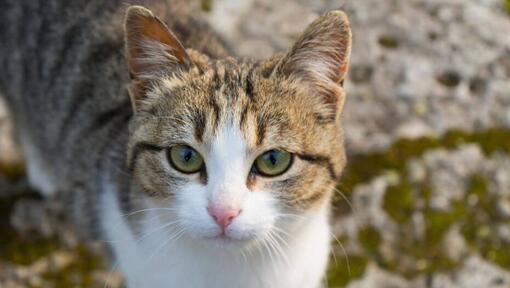
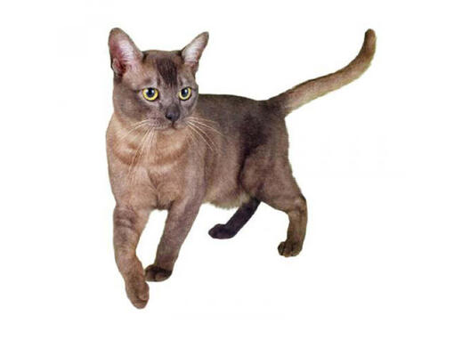

Abisinio
Los abisinios son gatos elegantes de tamaño mediano con un cuerpo ágil y fuerte, y patas esbeltas. Tienen la cabeza cuneiforme redondeada, con pequeños mechones característicos en las puntas de las orejas y ojos grandes y almendrados. Su pelaje corto y ceñido al cuerpo tiene un aspecto característico, que se debe a la presencia de varias franjas de color en cada pelo. El color más conocido es el cobrizo, pero hay algunos otros.
PERSONALIDAD
El abisinio es silencioso, inteligente y curioso; se dice que es fiel, disfruta de la compañía humana y se encariña con la familia. Le encanta el espacio y la actividad, es un buen trepador y le gustan los jardines llenos de árboles y lugares altos. El abisinio es juguetón, pero también bastante reflexivo y no demasiado imprudente.
ORIGEN: Abisinia (Etiopía)
Americano de pelo duro
Como su propio nombre indica, lo más característico de esta raza es su pelaje. El gato americano de pelo duro es grande y tiene un pelaje duro, elástico y áspero; cada pelo, de tamaño corto o mediano, es fino y encrespado o rizado. Los bigotes suelen ser rizados. El alcance completo del «rizado» no se manifiesta hasta que el gato es adulto. Puede que haya gatitos con un pelaje muy rizado que luego cambien a un pelo ondulado al crecer, y viceversa. Pueden presentar todo tipo de colores, dibujos y manchas.
PERSONALIDAD
El americano de pelo duro es un gato tranquilo y amistoso. Es relajado, dulce, apacible y juguetón; le encantan los juguetes y jugar con su dueño. No es una raza especialmente maulladora.
ORIGEN: Estados Unidos
Asiatico
Los gatos asiáticos tienen un tamaño mediano a grande, un cuerpo bastante musculoso y una cola que se estrecha y termina en una punta redondeada. Las hembras son mucho más pequeñas y delicadas que los machos. La cabeza es cuneiforme y la parte superior es ligeramente redondeada; las orejas son de tamaño mediano y están bastante separadas, y los ojos son grandes y tienen un contorno plateado. El pelaje, que parece de muaré, es corto, fino y se ciñe al cuerpo. Esta raza presenta una amplia gama de colores y patrones.
PERSONALIDAD
El asiático es muy parecido al burmés en su temperamento —es muy cariñoso y amistoso, aunque algo menos bullicioso que el burmés. A los asiáticos les encanta la atención y necesitan sentirse parte de la familia. Pueden ser bastante exigentes y suelen seguir a sus dueños por toda la casa para pedirles atención. Los asiáticos son muy inteligentes y suelen resolver problemas como el de abrir las puertas. Pueden ser muy sensibles a los sentimientos de sus amos, por lo que son unos compañeros excelentes.
ORIGEN: Gran Bretaña